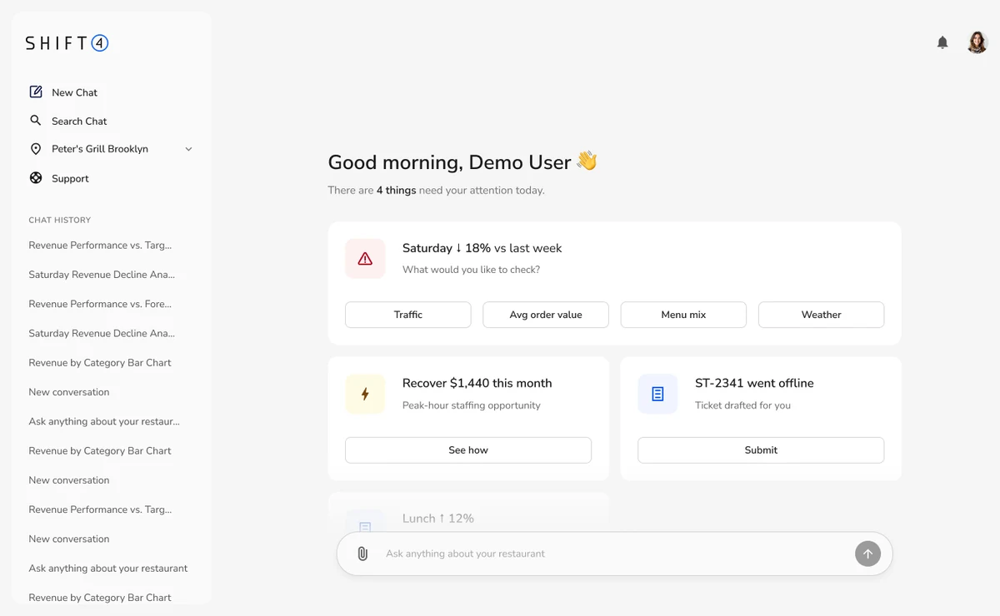
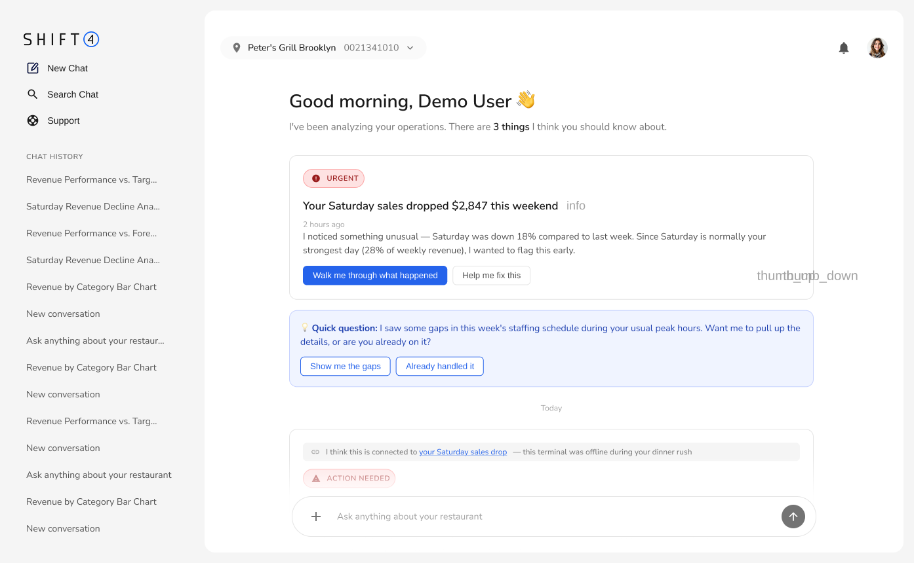

Information overload
Search, filters, lifecycle states, impact labels, confidence percentages, evidence, and multiple actions all competed for attention.
I designed a new AI-powered experience that tells restaurant operators what needs attention, explains why, and helps them take the next step.
Try the AI prototype
The final concept moved away from asking operators to manage AI insights and toward letting the AI prioritize the day, explain each issue, and lead directly into action.
The initial prototype explored rich operational analysis, confidence scores, filters, lifecycle tabs, recommended actions, and ROI estimates. It was powerful, but the operator still had to scan, interpret, prioritize, and manage the system.
Search, filters, lifecycle states, impact labels, confidence percentages, evidence, and multiple actions all competed for attention.
The draft made operators manage an AI insight tool instead of allowing the AI to behave like a proactive operational partner.
Short, contextual prompts replaced generic dashboard controls. They make the next step feel conversational while keeping the home experience calm.
The first prototype tested a data-rich inbox organized around insights, filters, evidence, status, and recommended actions.
A data-rich command center organized around insights, filters, status, evidence, and recommended actions.
Instead of managing a system of recommendations, the operator arrives to a short, personalized briefing and acts through focused entry points.

Inbox containing a set of AI insights
Personalized daily briefing
Creates immediate relevance and removes the feeling of another tool to maintain.
Search, filters, tabs, and impact labels
A short list that needs attention today
The AI performs the prioritization instead of outsourcing it back to the operator.
Metrics, confidence, evidence, status, and actions
One headline, context line, and next step
Progressive disclosure improves scanning while preserving deeper analysis when requested.
Manage, dismiss, customize, and track insights
Ask, investigate, submit, or see how
Actions are expressed in the language of the operator’s goal rather than the system’s workflow.
Insight generator inside a dashboard
Operational assistant with follow-through
Proactive prompts and contextual actions make the experience continuous rather than transactional.
Primarily optimization recommendations
Revenue, staffing, devices, and growth
The concept expands from analytics into a unified restaurant operations surface.
“There are four things that need your attention today” gives the page a clear purpose and frames the AI around urgency.
Instead of asking users to navigate statuses and impact filters, the final design offers contextual actions in the language of their goals.
Detailed analysis no longer occupies the starting screen. Operators enter a focused conversation only when a topic needs investigation.
The assistant can identify a decline, explain an opportunity, prepare a support request, and celebrate growth from one operational surface.
The final prototype prioritizes four issues, reveals context progressively, and leads operators directly toward resolution.
A calm home experience that organizes the day and uses direct actions to move naturally into resolution.
The final iteration reduces cognitive overhead, broadens the concept from analytics to operations, and creates a natural path from awareness to investigation and action.